Đối chiếu Community v3.1 và Community v3 từ PO
Khảo sát 6–7/11/2026 · Hai vai trò tiệm và cá nhân/thợ · HTML prototype local
Tóm tắt
50 mục đối chiếu bổ sung; mỗi mục ghi riêng căn cứ UI/mã nguồn. Không suy từ một nút demo rằng đã có API hoặc xử lý thật. Không xác nhận mất tính năng trên toàn gói PO khi shell lỗi hoặc chưa loại trừ mã tham khảo.
Giữ UI, dữ liệu và luồng cũ của V1; chỉ chuyển phần PO còn thiếu vào V1. Gian hàng, Reels, Live, News, Food, Địa ốc đã có phần lớn trong baseline, không đếm lại là mới.
Phụ lục 282 trạng thái ghi toàn bộ text, button, icon label, input, dropdown/options, checkbox, radio, switch, attributes, table/cell và ảnh lỗi đã thu. Đây là kiểm kê chứng cứ, không phải khẳng định từng hành vi đã chạy thành công.
Hai phiên bản và phạm vi
| V1 | V2 |
|---|
| Nguồn | html/v3.1/community.html; staff-community.html | from-po/goi-community-giao-dev/04-MAN-HINH-PROTOTYPE/shell-community.html; jobs.html, food.html, realestate.html độc lập |
| Phiên bản | Baseline 4a7230fa0336bd1fc97c9b9150d2e0a7ec82f517 trước bổ sung lượt này | Gói Community v3 do PO cung cấp; hash file trong baseline-sha256.json |
| Vai trò | owner / staff, identity của prototype hiện có | Business / Personal và vai trò trong module Jobs |
| Thiết bị | Khảo sát cặp 834×1112 tiệm, 390×844 tiệm và cá nhân/thợ; browser Chromium. Kiểm thử bản sau bổ sung dùng WebKit/iPhone, tách riêng kết quả. |
| Ngôn ngữ | English, một số dữ liệu/copy cũ còn tiếng Việt trong ảnh baseline | English sau chọn EN; một số tiêu đề module/VI toggle vẫn giữ từ nguồn PO |
Dữ liệu hai bộ khác nhau: BITCOIN NAIL BAR/Kim/Sally ở V1; Hoa Nail Studio/Jenny ở PO. Không dùng khác số tiền/lượt thích/dữ liệu mẫu để suy khác nghiệp vụ. Ảnh V1 là baseline đóng băng, không phải source sau bổ sung.
1. Phần có ở V1 nhưng bị mất ở V2
Chưa đủ căn cứ xác nhận mất trên toàn gói PO. Shell chưa có luồng tương đương đầy đủ Messages/1–1 Calls/Extra Shifts, đồng thời có lỗi module và mã tham khảo riêng. Các phần này được giữ nguyên ở V1; không thay bằng Page Inbox hoặc hội thoại mẫu PO.
2. Phần mới ở V2 so với baseline V1
SS01 · Feed / StoryStory: lối vào tạo và dải xem ngang
V1: Feed chưa có dải Story.
V2: PO có Create story, dải ngang, avatar, tên và nhãn SAMPLE.
Đã quan sát UI; giới hạn prototype local. Ảnh màn cha được dùng khi V1 chưa có màn tương ứng; xem tên ảnh để biết vai trò và kích thước.
Đề xuất / yêu cầu đã duyệt: bổ sung đúng phần PO này vào UI hiện có; giữ dữ liệu và engine Community cũ. Không mở rộng ngoài nguồn PO.
SS02 · StoryStory: nội dung 300 ký tự và ảnh
V1: Không có form Story tương ứng.
V2: Story text maxlength 300, Photo, Cancel và Post story; chặn nội dung rỗng.
Đã quan sát UI; giới hạn prototype local. Ảnh màn cha được dùng khi V1 chưa có màn tương ứng; xem tên ảnh để biết vai trò và kích thước.
V1 · owner-834-feed-v1V2 · owner-834-create-story-v2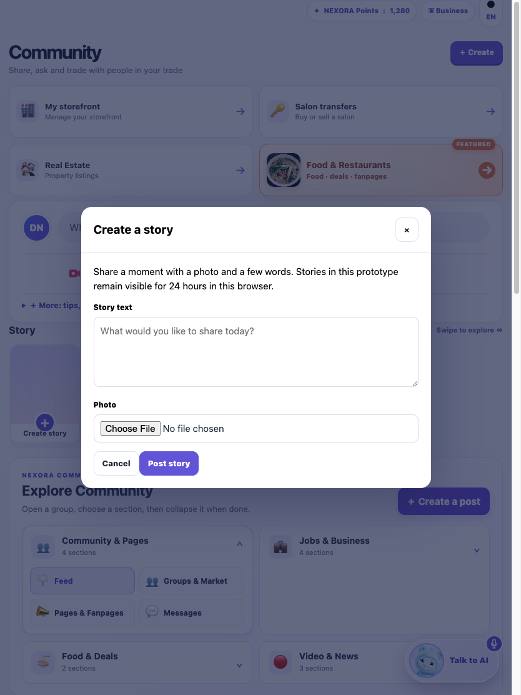
Đề xuất / yêu cầu đã duyệt: bổ sung đúng phần PO này vào UI hiện có; giữ dữ liệu và engine Community cũ. Không mở rộng ngoài nguồn PO.
SS03 · StoryStory: xem, tiếp theo, xóa và hạn 24 giờ
V1: Không có trình xem Story.
V2: Ảnh/chữ/tác giả, Next story, Delete story cho Story tự tạo; nội dung lưu 24 giờ trên trình duyệt.
Đã quan sát UI; giới hạn prototype local. Ảnh màn cha được dùng khi V1 chưa có màn tương ứng; xem tên ảnh để biết vai trò và kích thước.
V1 · owner-834-feed-v1V2 · owner-834-view-story-v2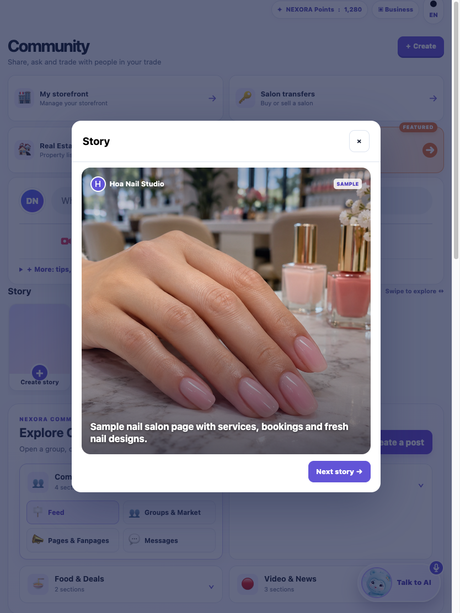
Đề xuất / yêu cầu đã duyệt: bổ sung đúng phần PO này vào UI hiện có; giữ dữ liệu và engine Community cũ. Không mở rộng ngoài nguồn PO.
SS04 · PeopleGợi ý kết bạn
V1: V1 có danh bạ/tìm thành viên và yêu cầu nhắn tin; chưa có bộ gợi ý và yêu cầu kết bạn PO này.
V2: Card tên, @username, vai trò, khu vực, lý do gợi ý; Connect và mở hồ sơ.
Đã quan sát UI; giới hạn prototype local. Ảnh màn cha được dùng khi V1 chưa có màn tương ứng; xem tên ảnh để biết vai trò và kích thước.
Đề xuất / yêu cầu đã duyệt: bổ sung đúng phần PO này vào UI hiện có; giữ dữ liệu và engine Community cũ. Không mở rộng ngoài nguồn PO.
SS05 · PeopleTìm người theo nhiều định danh
V1: V1 có danh bạ/tìm thành viên và yêu cầu nhắn tin; chưa có bộ gợi ý và yêu cầu kết bạn PO này.
V2: Find people: tên, username, số điện thoại được phép tìm, NEXORA ID; danh sách kết quả và trạng thái rỗng.
Đã quan sát UI; giới hạn prototype local. Ảnh màn cha được dùng khi V1 chưa có màn tương ứng; xem tên ảnh để biết vai trò và kích thước.
V1 · owner-834-connect-v1V2 · owner-834-people-v2 Đề xuất / yêu cầu đã duyệt: bổ sung đúng phần PO này vào UI hiện có; giữ dữ liệu và engine Community cũ. Không mở rộng ngoài nguồn PO.
SS06 · PeopleHồ sơ từ gợi ý
V1: V1 có danh bạ/tìm thành viên và yêu cầu nhắn tin; chưa có bộ gợi ý và yêu cầu kết bạn PO này.
V2: Ảnh, tên, handle, vai trò/khu vực, lý do; All people, Connect/Request sent, Hide.
Đã quan sát UI; giới hạn prototype local. Ảnh màn cha được dùng khi V1 chưa có màn tương ứng; xem tên ảnh để biết vai trò và kích thước.
V1 · owner-834-connect-v1V2 · owner-834-person-profile-v2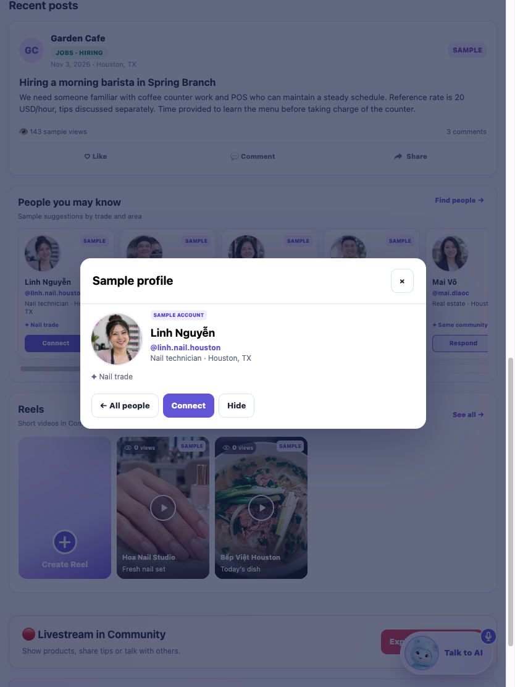
Đề xuất / yêu cầu đã duyệt: bổ sung đúng phần PO này vào UI hiện có; giữ dữ liệu và engine Community cũ. Không mở rộng ngoài nguồn PO.
SS07 · PeopleYêu cầu kết bạn đến và đã gửi
V1: V1 có danh bạ/tìm thành viên và yêu cầu nhắn tin; chưa có bộ gợi ý và yêu cầu kết bạn PO này.
V2: Danh sách received/sent; Accept, Decline, Cancel request; Friends/Respond/Sent trên card.
Đã quan sát UI; giới hạn prototype local. Ảnh màn cha được dùng khi V1 chưa có màn tương ứng; xem tên ảnh để biết vai trò và kích thước.
V1 · owner-834-connect-v1V2 · owner-834-friend-inbox-v2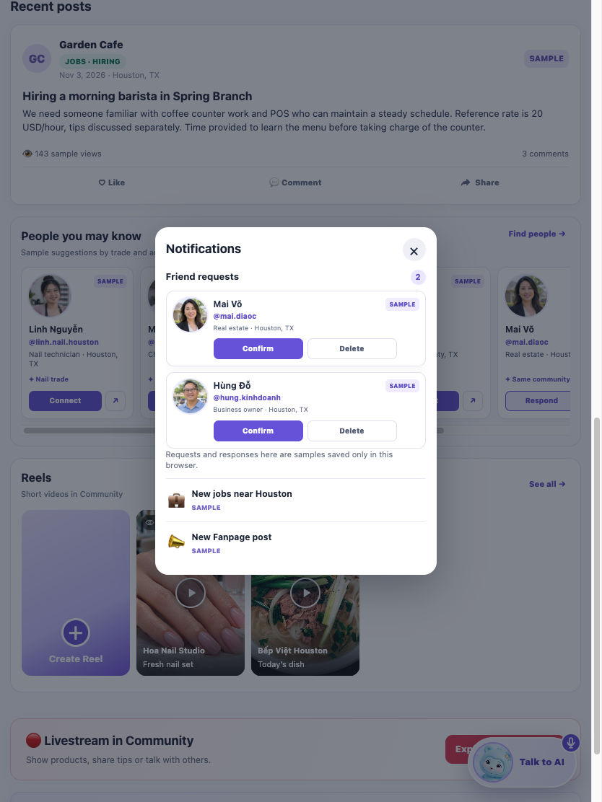
Đề xuất / yêu cầu đã duyệt: bổ sung đúng phần PO này vào UI hiện có; giữ dữ liệu và engine Community cũ. Không mở rộng ngoài nguồn PO.
SS08 · FeedPhạm vi xem bài Public / Friends / Only me
V1: Chọn đích Feed/Group, chưa có ba mức audience.
V2: Bộ chọn Public, Friends, Only me và nhãn audience trên bài.
Đã quan sát UI; giới hạn prototype local. Ảnh màn cha được dùng khi V1 chưa có màn tương ứng; xem tên ảnh để biết vai trò và kích thước.
Đề xuất / yêu cầu đã duyệt: bổ sung đúng phần PO này vào UI hiện có; giữ dữ liệu và engine Community cũ. Không mở rộng ngoài nguồn PO.
SS09 · FeedVideo trực tiếp trong bài Feed
V1: Composer cũ có ảnh, chưa có trường video cho bài thường.
V2: Video upload (giới hạn mẫu 50 MB) và trình phát trong bài; khác với Reel đã có.
Đã quan sát UI; giới hạn prototype local. Ảnh màn cha được dùng khi V1 chưa có màn tương ứng; xem tên ảnh để biết vai trò và kích thước.
V1 · owner-834-post-composer-v1V2 · owner-834-post-composer-v2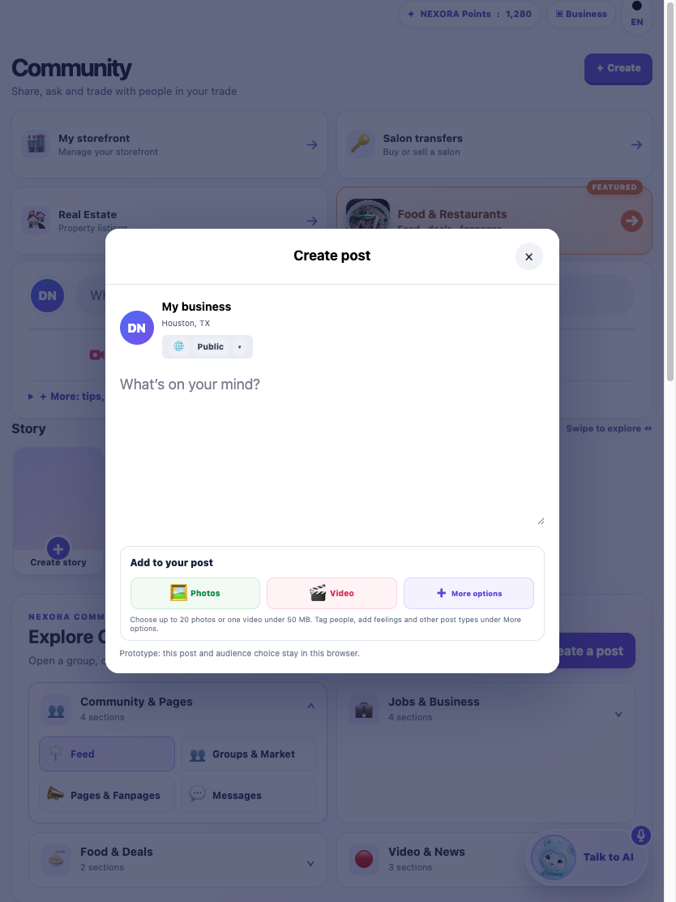
Đề xuất / yêu cầu đã duyệt: bổ sung đúng phần PO này vào UI hiện có; giữ dữ liệu và engine Community cũ. Không mở rộng ngoài nguồn PO.
SS10 · FeedGiới hạn ảnh Feed mở rộng và GIF
V1: Composer V1 giới hạn 6 ảnh.
V2: PO cho tối đa 20 ảnh; input nhận ảnh/GIF. Giới hạn được đối chiếu thêm trong mã nguồn.
UI đã quan sát; giới hạn tệp đối chiếu mã PO. Ảnh màn cha được dùng khi V1 chưa có màn tương ứng; xem tên ảnh để biết vai trò và kích thước.
V1 · owner-834-post-composer-v1V2 · owner-834-post-composer-v2 Đề xuất / yêu cầu đã duyệt: bổ sung đúng phần PO này vào UI hiện có; giữ dữ liệu và engine Community cũ. Không mở rộng ngoài nguồn PO.
SS11 · FeedTag people
V1: Composer chưa có thao tác này.
V2: Nút Tag people chèn ký hiệu @ vào nội dung, chưa phải hệ thống mention backend.
Đã quan sát UI; giới hạn prototype local. Ảnh màn cha được dùng khi V1 chưa có màn tương ứng; xem tên ảnh để biết vai trò và kích thước.
V1 · owner-834-post-composer-v1V2 · owner-834-post-tag-v2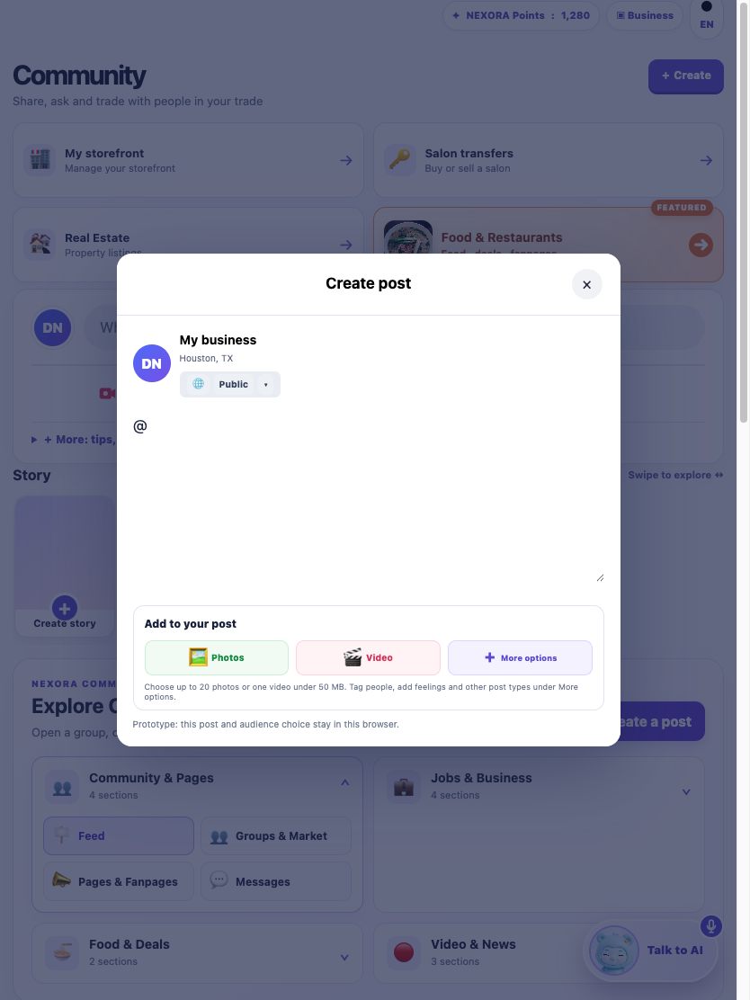
Đề xuất / yêu cầu đã duyệt: bổ sung đúng phần PO này vào UI hiện có; giữ dữ liệu và engine Community cũ. Không mở rộng ngoài nguồn PO.
SS12 · FeedFeeling
V1: Composer chưa có thao tác này.
V2: Nút Feeling chèn emoji vào nội dung.
Đã quan sát UI; giới hạn prototype local. Ảnh màn cha được dùng khi V1 chưa có màn tương ứng; xem tên ảnh để biết vai trò và kích thước.
V1 · owner-834-post-composer-v1V2 · owner-834-post-feeling-v2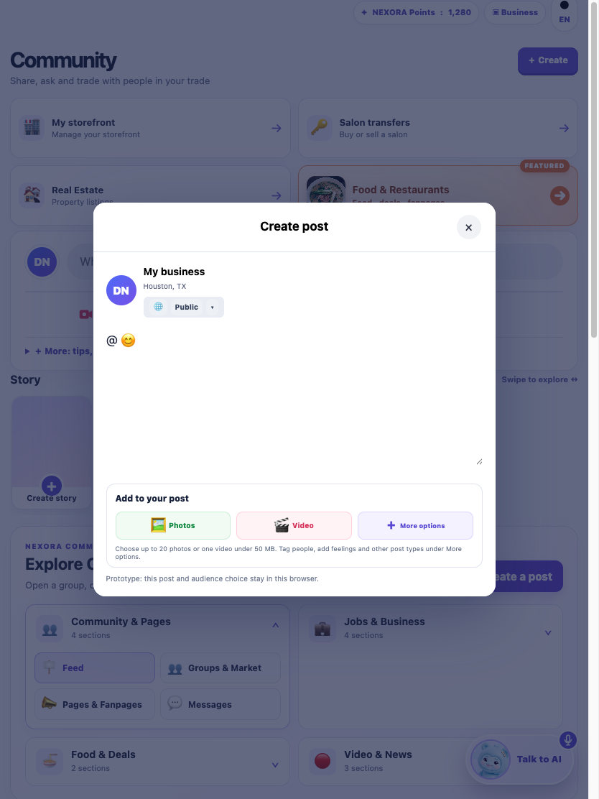
Đề xuất / yêu cầu đã duyệt: bổ sung đúng phần PO này vào UI hiện có; giữ dữ liệu và engine Community cũ. Không mở rộng ngoài nguồn PO.
SS13 · FeedCheck in
V1: Composer chưa có thao tác này.
V2: Nút Check in chèn ký hiệu vị trí và khu vực vào nội dung.
Đã quan sát UI; giới hạn prototype local. Ảnh màn cha được dùng khi V1 chưa có màn tương ứng; xem tên ảnh để biết vai trò và kích thước.
V1 · owner-834-post-composer-v1V2 · owner-834-post-checkin-v2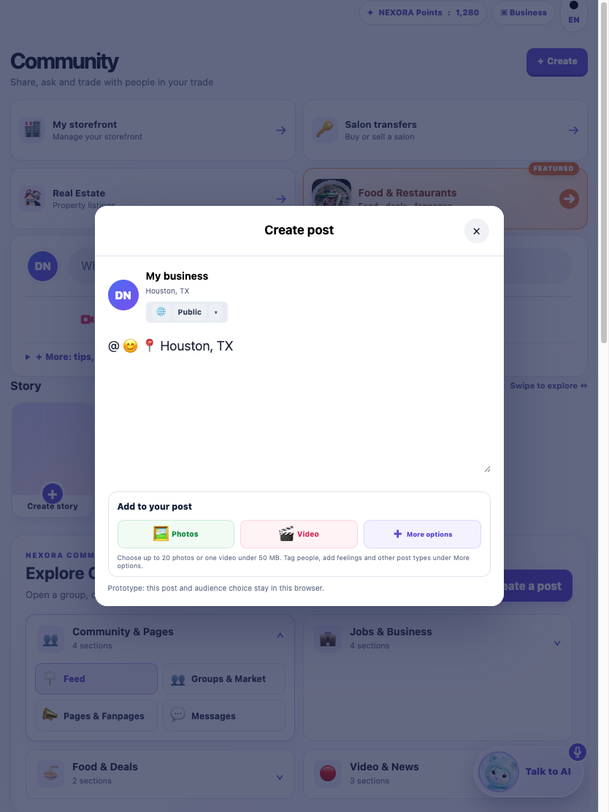
Đề xuất / yêu cầu đã duyệt: bổ sung đúng phần PO này vào UI hiện có; giữ dữ liệu và engine Community cũ. Không mở rộng ngoài nguồn PO.
SS14 · FeedLối vào nhanh Photo/video, Reel và Live trong Feed
V1: Các module Reel/Live đã có trong menu chung.
V2: PO thêm các lối vào ngay composer Feed; không coi Reel/Live là tính năng hoàn toàn mới.
Đã quan sát UI; giới hạn prototype local. Ảnh màn cha được dùng khi V1 chưa có màn tương ứng; xem tên ảnh để biết vai trò và kích thước.
V1 · owner-834-feed-v1V2 · owner-834-feed-v2 Đề xuất / yêu cầu đã duyệt: bổ sung đúng phần PO này vào UI hiện có; giữ dữ liệu và engine Community cũ. Không mở rộng ngoài nguồn PO.
SS15 · FeedChia sẻ và sao chép liên kết bài
V1: Menu tương tác cũ chưa có thao tác Share tương đương trên mỗi bài thường.
V2: PO có Share, sao chép liên kết/nội dung; không chứng minh xuất bản ra mạng xã hội.
Đã quan sát UI; giới hạn prototype local. Ảnh màn cha được dùng khi V1 chưa có màn tương ứng; xem tên ảnh để biết vai trò và kích thước.
V1 · owner-834-feed-v1V2 · owner-834-feed-v2 Đề xuất / yêu cầu đã duyệt: bổ sung đúng phần PO này vào UI hiện có; giữ dữ liệu và engine Community cũ. Không mở rộng ngoài nguồn PO.
SS16 · FeedLượt xem và nhãn trạng thái bài
V1: Like/comment có sẵn; chưa có view counter của PO.
V2: Bổ sung lượt xem; dữ liệu mẫu được ghi sample views, không là lượt xem thật.
Đã quan sát UI; giới hạn prototype local. Ảnh màn cha được dùng khi V1 chưa có màn tương ứng; xem tên ảnh để biết vai trò và kích thước.
V1 · owner-834-feed-v1V2 · owner-834-feed-v2 Đề xuất / yêu cầu đã duyệt: bổ sung đúng phần PO này vào UI hiện có; giữ dữ liệu và engine Community cũ. Không mở rộng ngoài nguồn PO.
SS17 · FeedGhim, lưu và tạm dừng bài
V1: Menu cũ có edit/boost/delete/report.
V2: Menu bài tự tạo trong mã PO có pin/pause/save/copy; ảnh More là menu tạo nội dung gần nhất, chưa chụp menu bài sau tạo.
Đối chiếu mã PO; thiếu ảnh menu bài đúng trạng thái. Ảnh màn cha được dùng khi V1 chưa có màn tương ứng; xem tên ảnh để biết vai trò và kích thước.
Đề xuất / yêu cầu đã duyệt: bổ sung đúng phần PO này vào UI hiện có; giữ dữ liệu và engine Community cũ. Không mở rộng ngoài nguồn PO.
SS18 · GroupsQuyền riêng tư nhóm
V1: Form nhóm cũ có tên/ngành/loại/khu vực/mô tả/nội quy, chưa có phần mới này.
V2: Public / Private trong form nhóm.
Đã quan sát UI; giới hạn prototype local. Ảnh màn cha được dùng khi V1 chưa có màn tương ứng; xem tên ảnh để biết vai trò và kích thước.
Đề xuất / yêu cầu đã duyệt: bổ sung đúng phần PO này vào UI hiện có; giữ dữ liệu và engine Community cũ. Không mở rộng ngoài nguồn PO.
SS19 · GroupsDuyệt bài thành viên
V1: Form nhóm cũ có tên/ngành/loại/khu vực/mô tả/nội quy, chưa có phần mới này.
V2: Checkbox Admin approves member posts; mặc định bật trong PO.
Đã quan sát UI; giới hạn prototype local. Ảnh màn cha được dùng khi V1 chưa có màn tương ứng; xem tên ảnh để biết vai trò và kích thước.
V1 · owner-834-create-group-v1V2 · owner-834-create-group-v2 Đề xuất / yêu cầu đã duyệt: bổ sung đúng phần PO này vào UI hiện có; giữ dữ liệu và engine Community cũ. Không mở rộng ngoài nguồn PO.
SS20 · GroupsẢnh bìa nhóm
V1: Form nhóm cũ có tên/ngành/loại/khu vực/mô tả/nội quy, chưa có phần mới này.
V2: Cover photo optional trong form, ảnh hiển thị trong chi tiết.
Đã quan sát UI; giới hạn prototype local. Ảnh màn cha được dùng khi V1 chưa có màn tương ứng; xem tên ảnh để biết vai trò và kích thước.
V1 · owner-834-create-group-v1V2 · owner-834-create-group-v2 Đề xuất / yêu cầu đã duyệt: bổ sung đúng phần PO này vào UI hiện có; giữ dữ liệu và engine Community cũ. Không mở rộng ngoài nguồn PO.
SS21 · GroupsNhóm ngành mở rộng
V1: Form nhóm cũ có tên/ngành/loại/khu vực/mô tả/nội quy, chưa có phần mới này.
V2: Nail trade, Trades & services, Food, Community market, Other; V1 đang thiên ngành beauty.
Đã quan sát UI; giới hạn prototype local. Ảnh màn cha được dùng khi V1 chưa có màn tương ứng; xem tên ảnh để biết vai trò và kích thước.
V1 · owner-834-create-group-v1V2 · owner-834-create-group-v2 Đề xuất / yêu cầu đã duyệt: bổ sung đúng phần PO này vào UI hiện có; giữ dữ liệu và engine Community cũ. Không mở rộng ngoài nguồn PO.
SS22 · GroupsTìm nhóm và chuyển Discover / My groups
V1: Có bộ lọc/khu vực và Join/Leave; chưa có cùng search và hai chế độ này.
V2: Input tìm nhóm/items, Search, Discover, My groups, Market.
Đã quan sát UI; giới hạn prototype local. Ảnh màn cha được dùng khi V1 chưa có màn tương ứng; xem tên ảnh để biết vai trò và kích thước.
Đề xuất / yêu cầu đã duyệt: bổ sung đúng phần PO này vào UI hiện có; giữ dữ liệu và engine Community cũ. Không mở rộng ngoài nguồn PO.
SS23 · GroupsDanh sách Members và vai trò quản trị
V1: Chi tiết cũ tập trung bài và thành viên qua luồng nhóm đang chạy.
V2: Tab Members; phân biệt admin/moderator/member; nâng/hạ moderator và remove trong nhóm tự quản.
Đã quan sát UI; giới hạn prototype local. Ảnh màn cha được dùng khi V1 chưa có màn tương ứng; xem tên ảnh để biết vai trò và kích thước.
Đề xuất / yêu cầu đã duyệt: bổ sung đúng phần PO này vào UI hiện có; giữ dữ liệu và engine Community cũ. Không mở rộng ngoài nguồn PO.
SS24 · GroupsHàng chờ yêu cầu vào nhóm
V1: Chưa có bảng Admin PO với yêu cầu chờ.
V2: Join requests có số đếm, tên, Approve/Decline.
Đã quan sát UI; giới hạn prototype local. Ảnh màn cha được dùng khi V1 chưa có màn tương ứng; xem tên ảnh để biết vai trò và kích thước.
V1 · owner-834-group-detail-v1V2 · owner-834-group-admin-v2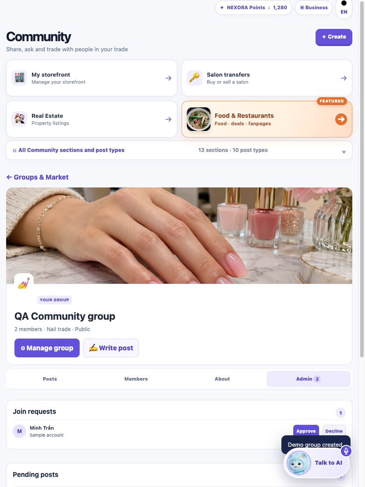
Đề xuất / yêu cầu đã duyệt: bổ sung đúng phần PO này vào UI hiện có; giữ dữ liệu và engine Community cũ. Không mở rộng ngoài nguồn PO.
SS25 · GroupsHàng chờ duyệt bài nhóm
V1: Chưa có danh sách pending bài nhóm PO.
V2: Pending posts, tác giả, nội dung, Approve post/Decline, số lượng trên Admin.
Đã quan sát UI; giới hạn prototype local. Ảnh màn cha được dùng khi V1 chưa có màn tương ứng; xem tên ảnh để biết vai trò và kích thước.
V1 · owner-834-group-detail-v1V2 · owner-834-group-admin-v2 Đề xuất / yêu cầu đã duyệt: bổ sung đúng phần PO này vào UI hiện có; giữ dữ liệu và engine Community cũ. Không mở rộng ngoài nguồn PO.
SS26 · GroupsTạm dừng và mở lại nhóm
V1: Chưa có Pause group trong công cụ quản trị cũ.
V2: Edit group, Pause group và trạng thái reopened; lưu local.
Đã quan sát UI; giới hạn prototype local. Ảnh màn cha được dùng khi V1 chưa có màn tương ứng; xem tên ảnh để biết vai trò và kích thước.
V1 · owner-834-group-detail-v1V2 · owner-834-group-admin-v2 Đề xuất / yêu cầu đã duyệt: bổ sung đúng phần PO này vào UI hiện có; giữ dữ liệu và engine Community cũ. Không mở rộng ngoài nguồn PO.
SS27 · PagesPage: email
V1: Form Page cũ chưa có trường/lựa chọn tương ứng.
V2: Trường Email bổ sung bên cạnh Phone.
Đã quan sát UI; giới hạn prototype local. Ảnh màn cha được dùng khi V1 chưa có màn tương ứng; xem tên ảnh để biết vai trò và kích thước.
Đề xuất / yêu cầu đã duyệt: bổ sung đúng phần PO này vào UI hiện có; giữ dữ liệu và engine Community cũ. Không mở rộng ngoài nguồn PO.
SS28 · PagesPage: địa chỉ cụ thể
V1: Form Page cũ chưa có trường/lựa chọn tương ứng.
V2: Trường Address bổ sung, tách với Area.
Đã quan sát UI; giới hạn prototype local. Ảnh màn cha được dùng khi V1 chưa có màn tương ứng; xem tên ảnh để biết vai trò và kích thước.
V1 · owner-834-create-page-v1V2 · owner-834-create-page-v2 Đề xuất / yêu cầu đã duyệt: bổ sung đúng phần PO này vào UI hiện có; giữ dữ liệu và engine Community cũ. Không mở rộng ngoài nguồn PO.
SS29 · PagesPage: website và Visit website
V1: Form Page cũ chưa có trường/lựa chọn tương ứng.
V2: Website và tùy chọn CTA Visit website; không bỏ Message/Call đang có.
Đã quan sát UI; giới hạn prototype local. Ảnh màn cha được dùng khi V1 chưa có màn tương ứng; xem tên ảnh để biết vai trò và kích thước.
V1 · owner-834-create-page-v1V2 · owner-834-create-page-v2 Đề xuất / yêu cầu đã duyệt: bổ sung đúng phần PO này vào UI hiện có; giữ dữ liệu và engine Community cũ. Không mở rộng ngoài nguồn PO.
SS30 · PagesPage: sáu nhóm phân loại
V1: Form Page cũ chưa có trường/lựa chọn tương ứng.
V2: Business, Nail salon, Restaurant, Service, Creator, Community; khác danh mục 3 ngành V1.
Đã quan sát UI; giới hạn prototype local. Ảnh màn cha được dùng khi V1 chưa có màn tương ứng; xem tên ảnh để biết vai trò và kích thước.
V1 · owner-834-create-page-v1V2 · owner-834-create-page-v2 Đề xuất / yêu cầu đã duyệt: bổ sung đúng phần PO này vào UI hiện có; giữ dữ liệu và engine Community cũ. Không mở rộng ngoài nguồn PO.
SS31 · PagesPage Services công khai
V1: Chưa có tab catalog dịch vụ PO.
V2: Services & products; thêm tên, giá, mô tả và remove trong Page tự quản; khách xem danh sách.
Đã quan sát UI; giới hạn prototype local. Ảnh màn cha được dùng khi V1 chưa có màn tương ứng; xem tên ảnh để biết vai trò và kích thước.
V1 · owner-834-page-detail-v1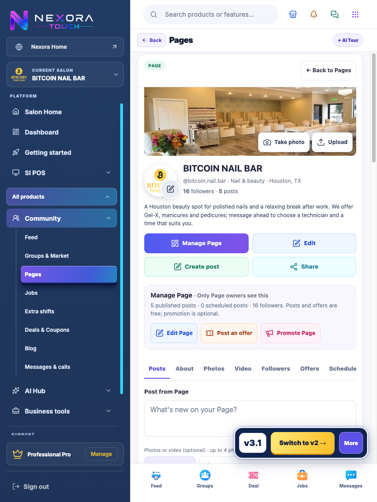
V2 · owner-834-page-services-v2 Đề xuất / yêu cầu đã duyệt: bổ sung đúng phần PO này vào UI hiện có; giữ dữ liệu và engine Community cũ. Không mở rộng ngoài nguồn PO.
SS32 · PagesPage Studio gom công cụ quản lý
V1: V1 có tạo/sửa Page, nội dung/media/quảng cáo ở luồng cũ.
V2: Tab Manage, thông tin Posts/Post views/Sample chats; các lối tắt ảnh/details, post, service, promotion, inbox.
Đã quan sát UI; giới hạn prototype local. Ảnh màn cha được dùng khi V1 chưa có màn tương ứng; xem tên ảnh để biết vai trò và kích thước.
V1 · owner-834-page-detail-v1V2 · owner-834-page-manage-v2 Đề xuất / yêu cầu đã duyệt: bổ sung đúng phần PO này vào UI hiện có; giữ dữ liệu và engine Community cũ. Không mở rộng ngoài nguồn PO.
SS33 · PagesPage access: người quản lý và vai trò
V1: Chưa có danh sách Page access của PO.
V2: Add person, role, remove; PO nói rõ chỉ lưu trên thiết bị, không cấp quyền thật sang tài khoản khác.
Đã quan sát UI; giới hạn prototype local. Ảnh màn cha được dùng khi V1 chưa có màn tương ứng; xem tên ảnh để biết vai trò và kích thước.
V1 · owner-834-page-detail-v1V2 · owner-834-page-manage-v2 Đề xuất / yêu cầu đã duyệt: bổ sung đúng phần PO này vào UI hiện có; giữ dữ liệu và engine Community cũ. Không mở rộng ngoài nguồn PO.
SS34 · PagesPage Inbox demo theo Page
V1: Tin nhắn trực tiếp cũ có sẵn và phải giữ nguyên.
V2: PO thêm hội thoại trong Page Inbox, nhập và gửi trả lời local; không thay Messages/Calls cũ.
Đã quan sát UI; giới hạn prototype local. Ảnh màn cha được dùng khi V1 chưa có màn tương ứng; xem tên ảnh để biết vai trò và kích thước.
V1 · owner-834-connect-v1V2 · owner-834-page-inbox-v2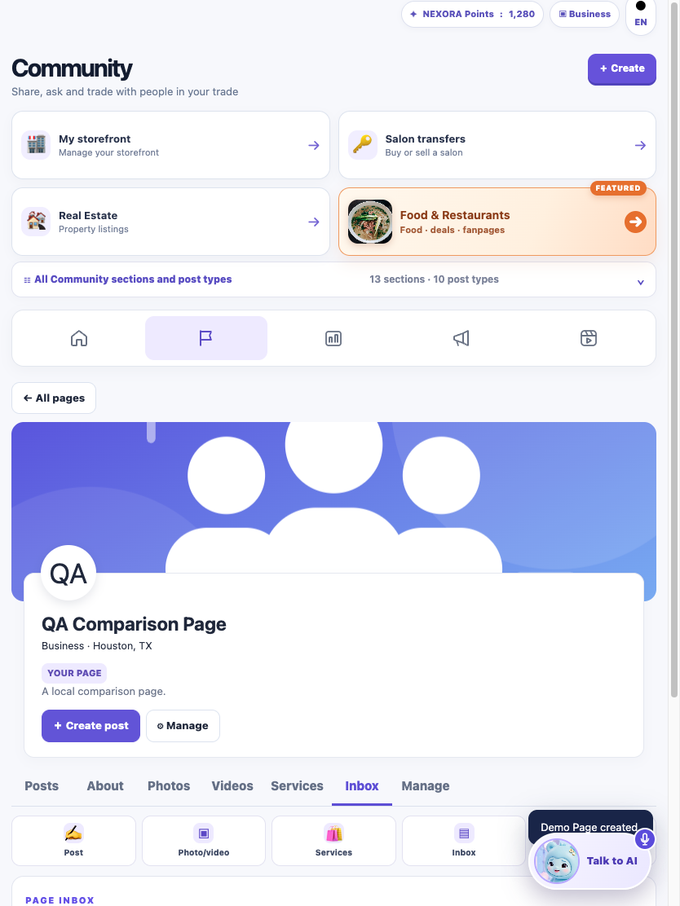
Đề xuất / yêu cầu đã duyệt: bổ sung đúng phần PO này vào UI hiện có; giữ dữ liệu và engine Community cũ. Không mở rộng ngoài nguồn PO.
SS35 · PagesĐăng bài với danh tính Page từ composer
V1: Đăng Page ở luồng riêng đã có.
V2: PO thêm lựa chọn Post as owned Page; đồng bộ cùng bản ghi Page.
Đã quan sát UI; giới hạn prototype local. Ảnh màn cha được dùng khi V1 chưa có màn tương ứng; xem tên ảnh để biết vai trò và kích thước.
V1 · owner-834-post-composer-v1V2 · owner-834-own-page-v2 Đề xuất / yêu cầu đã duyệt: bổ sung đúng phần PO này vào UI hiện có; giữ dữ liệu và engine Community cũ. Không mở rộng ngoài nguồn PO.
SS36 · JobsDanh bạ thợ dành cho tiệm
V1: V1 xem người qua hồ sơ ứng viên/tin tìm việc.
V2: PO có Find workers, card kỹ năng/kinh nghiệm/khu vực/giờ rảnh và Invite to discuss.
Đã quan sát UI; giới hạn prototype local. Ảnh màn cha được dùng khi V1 chưa có màn tương ứng; xem tên ảnh để biết vai trò và kích thước.
Đề xuất / yêu cầu đã duyệt: bổ sung đúng phần PO này vào UI hiện có; giữ dữ liệu và engine Community cũ. Không mở rộng ngoài nguồn PO.
SS37 · JobsBộ lọc danh bạ thợ
V1: Chưa có bộ lọc cùng danh bạ mới.
V2: Search, Clear, All trades, Nail technicians, Other work; chip kỹ năng.
Đã quan sát UI; giới hạn prototype local. Ảnh màn cha được dùng khi V1 chưa có màn tương ứng; xem tên ảnh để biết vai trò và kích thước.
V1 · owner-834-jobs-v1V2 · owner-834-workers-module-v2 Đề xuất / yêu cầu đã duyệt: bổ sung đúng phần PO này vào UI hiện có; giữ dữ liệu và engine Community cũ. Không mở rộng ngoài nguồn PO.
SS38 · JobsInvites & messages theo vai trò
V1: V1 có apply/invite trong các luồng hiện hữu.
V2: PO thêm lối vào tập trung Invitations & messages; không thay engine ứng tuyển/nhắn tin hiện tại.
Đã quan sát UI; giới hạn prototype local. Ảnh màn cha được dùng khi V1 chưa có màn tương ứng; xem tên ảnh để biết vai trò và kích thước.
V1 · owner-834-jobs-v1V2 · owner-834-owner-invites-module-v2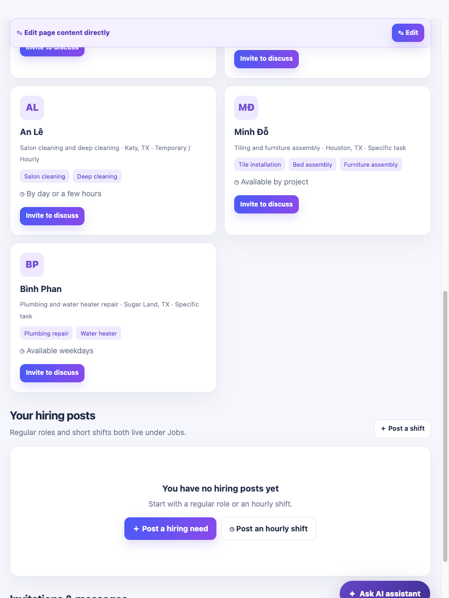
Đề xuất / yêu cầu đã duyệt: bổ sung đúng phần PO này vào UI hiện có; giữ dữ liệu và engine Community cũ. Không mở rộng ngoài nguồn PO.
SS39 · JobsOffer services: lối đăng dịch vụ cá nhân
V1: V1 có seeking/hiring và extra shifts.
V2: PO bổ sung nhánh Offer services theo task/project cùng Full-time/Part-time/Spare hours.
Đã quan sát UI; giới hạn prototype local. Ảnh màn cha được dùng khi V1 chưa có màn tương ứng; xem tên ảnh để biết vai trò và kích thước.
Đề xuất / yêu cầu đã duyệt: bổ sung đúng phần PO này vào UI hiện có; giữ dữ liệu và engine Community cũ. Không mở rộng ngoài nguồn PO.
SS40 · JobsBộ kỹ năng 10 nhóm ngành
V1: Profile cũ có bộ kỹ năng nhưng chưa đủ các nhóm PO.
V2: Nail, Home & Construction, Electrical & Plumbing, Cleaning & Maintenance, Food & Events, Auto & Mobile Services, Care & Family, Salon operations & support, Other beauty services, Office & Technology.
Đã quan sát UI; giới hạn prototype local. Ảnh màn cha được dùng khi V1 chưa có màn tương ứng; xem tên ảnh để biết vai trò và kích thước.
V1 · staff-390-jobs-v1V2 · staff-390-profile-form-module-v2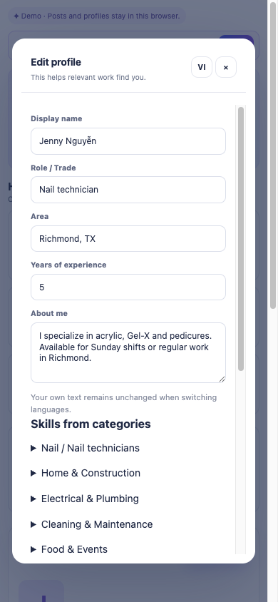
Đề xuất / yêu cầu đã duyệt: bổ sung đúng phần PO này vào UI hiện có; giữ dữ liệu và engine Community cũ. Không mở rộng ngoài nguồn PO.
SS41 · JobsKỹ năng tự nhập
V1: Chưa có Custom skills bổ sung trực tiếp vào catalog PO.
V2: Custom skills và Add; giữ checkbox chọn kỹ năng.
Đã quan sát UI; giới hạn prototype local. Ảnh màn cha được dùng khi V1 chưa có màn tương ứng; xem tên ảnh để biết vai trò và kích thước.
V1 · staff-390-jobs-v1V2 · staff-390-profile-form-module-v2 Đề xuất / yêu cầu đã duyệt: bổ sung đúng phần PO này vào UI hiện có; giữ dữ liệu và engine Community cũ. Không mở rộng ngoài nguồn PO.
SS42 · JobsLịch rảnh dạng tuần 7 ngày
V1: Availability đã có dạng danh sách.
V2: PO thêm Sun–Sat, giờ rảnh hoặc Not set; vẫn giữ danh sách các lịch đã đăng.
Đã quan sát UI; giới hạn prototype local. Ảnh màn cha được dùng khi V1 chưa có màn tương ứng; xem tên ảnh để biết vai trò và kích thước.
V1 · staff-390-jobs-v1V2 · staff-390-availability-module-v2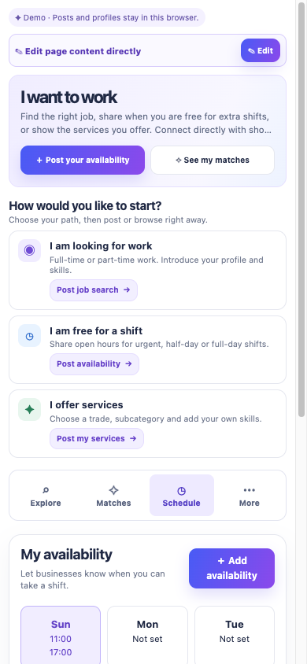
Đề xuất / yêu cầu đã duyệt: bổ sung đúng phần PO này vào UI hiện có; giữ dữ liệu và engine Community cũ. Không mở rộng ngoài nguồn PO.
SS43 · JobsNgày cụ thể hoặc lặp hằng tuần
V1: Form cũ chưa ẩn/hiện cùng logic PO.
V2: Schedule type: Specific date / Repeat weekly; đổi Date sang weekday, Start/End.
Đã quan sát UI; giới hạn prototype local. Ảnh màn cha được dùng khi V1 chưa có màn tương ứng; xem tên ảnh để biết vai trò và kích thước.
V1 · staff-390-jobs-v1V2 · staff-390-availability-form-module-v2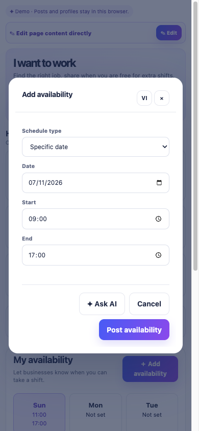
Đề xuất / yêu cầu đã duyệt: bổ sung đúng phần PO này vào UI hiện có; giữ dữ liệu và engine Community cũ. Không mở rộng ngoài nguồn PO.
SS44 · TransfersSang nhượng: ba mẫu nội dung
V1: Board và form transfer đã có.
V2: Mẫu Nail salon, Spa / beauty, Other shop; điền sẵn cấu trúc, thay placeholder bằng thông tin thật.
Đã quan sát UI; giới hạn prototype local. Ảnh màn cha được dùng khi V1 chưa có màn tương ứng; xem tên ảnh để biết vai trò và kích thước.
Đề xuất / yêu cầu đã duyệt: bổ sung đúng phần PO này vào UI hiện có; giữ dữ liệu và engine Community cũ. Không mở rộng ngoài nguồn PO.
SS45 · TransfersSang nhượng: Build draft từ chi tiết
V1: Chưa có bộ dựng mô tả tương ứng.
V2: Build draft ghép salon, area, stations, lease, assets, reason và asking price từ form; không gọi AI/backend.
Đã quan sát UI; giới hạn prototype local. Ảnh màn cha được dùng khi V1 chưa có màn tương ứng; xem tên ảnh để biết vai trò và kích thước.
V1 · owner-834-transfer-v1V2 · owner-834-transfer-post-module-v2 Đề xuất / yêu cầu đã duyệt: bổ sung đúng phần PO này vào UI hiện có; giữ dữ liệu và engine Community cũ. Không mở rộng ngoài nguồn PO.
SS46 · FoodFood: tìm món và gian hàng
V1: V1 có Food module độc lập; chưa có phần khám phá bổ sung này của shell PO.
V2: Input tìm dishes/storefronts cùng trạng thái rỗng.
Quan sát bổ sung: gọi openFood() nguyên bản sau khi route shell lỗi; không sửa DOM/source PO. Ảnh màn cha được dùng khi V1 chưa có màn tương ứng; xem tên ảnh để biết vai trò và kích thước.
Đề xuất / yêu cầu đã duyệt: bổ sung đúng phần PO này vào UI hiện có; giữ dữ liệu và engine Community cũ. Không mở rộng ngoài nguồn PO.
SS47 · FoodFood: khu vực Houston
V1: V1 có Food module độc lập; chưa có phần khám phá bổ sung này của shell PO.
V2: All Houston, Bellaire / Little Saigon, Katy, Sugar Land, Spring Branch, Houston; chip khu vực; Other areas Coming later.
Quan sát bổ sung: gọi openFood() nguyên bản sau khi route shell lỗi; không sửa DOM/source PO. Ảnh màn cha được dùng khi V1 chưa có màn tương ứng; xem tên ảnh để biết vai trò và kích thước.
V1 · owner-834-food-v1V2 · owner-834-food-supplement-v2 Đề xuất / yêu cầu đã duyệt: bổ sung đúng phần PO này vào UI hiện có; giữ dữ liệu và engine Community cũ. Không mở rộng ngoài nguồn PO.
SS48 · FoodFood: loại món và vùng miền
V1: V1 có Food module độc lập; chưa có phần khám phá bổ sung này của shell PO.
V2: Dish type All/Main dish/Dessert/Beverage/Snack và Cuisine region All/North/Central/South.
Quan sát bổ sung: gọi openFood() nguyên bản sau khi route shell lỗi; không sửa DOM/source PO. Ảnh màn cha được dùng khi V1 chưa có màn tương ứng; xem tên ảnh để biết vai trò và kích thước.
V1 · owner-834-food-v1V2 · owner-834-food-supplement-v2 Đề xuất / yêu cầu đã duyệt: bổ sung đúng phần PO này vào UI hiện có; giữ dữ liệu và engine Community cũ. Không mở rộng ngoài nguồn PO.
SS49 · FoodFood: gian hàng dùng chung
V1: V1 có Food module độc lập; chưa có phần khám phá bổ sung này của shell PO.
V2: Community storefronts, Open my storefront/Create storefront, card gian hàng và View storefront/Message; giữ cùng shop state.
Quan sát bổ sung: gọi openFood() nguyên bản sau khi route shell lỗi; không sửa DOM/source PO. Ảnh màn cha được dùng khi V1 chưa có màn tương ứng; xem tên ảnh để biết vai trò và kích thước.
V1 · owner-834-food-v1V2 · owner-834-food-supplement-v2 Đề xuất / yêu cầu đã duyệt: bổ sung đúng phần PO này vào UI hiện có; giữ dữ liệu và engine Community cũ. Không mở rộng ngoài nguồn PO.
SS50 · FoodFood: review sao và card món
V1: V1 có Food module độc lập; chưa có phần khám phá bổ sung này của shell PO.
V2: Review mẫu gồm người viết, tiệm, khu vực, sao và nội dung; món gồm ảnh/giá/tiệm/loại/vùng/trạng thái; chưa là đặt món/thanh toán.
Quan sát bổ sung: gọi openFood() nguyên bản sau khi route shell lỗi; không sửa DOM/source PO. Ảnh màn cha được dùng khi V1 chưa có màn tương ứng; xem tên ảnh để biết vai trò và kích thước.
V1 · owner-834-food-v1V2 · owner-834-food-supplement-v2 Đề xuất / yêu cầu đã duyệt: bổ sung đúng phần PO này vào UI hiện có; giữ dữ liệu và engine Community cũ. Không mở rộng ngoài nguồn PO.
3. Cả hai có, V2 cải thiện UI
Không gán nhãn cải thiện tổng thể khi nội dung/dữ liệu và shell khác nhau. Chưa có số bước hoặc khả năng sử dụng đồng điều kiện đủ để kết luận chắc chắn. Các thay đổi bố cục được ghi trung tính dưới đây.
Khác biệt trung tính và phần đã có
Gian hàng và sản phẩm/dịch vụ
Đã có ở cả hai: thông tin shop, progress/checklist, product/service/introduction, status Available/Preorder/Unavailable, shareFeed, lối tạo post/deal/Page/Messages. Chủ yếu khác nhãn prototype và dữ liệu.
Reels
Đã có form title/body/area/media; PO có sample clips và nhãn prototype. Không tính lại là tính năng mới.
Livestream
Cùng form title/type/city/description/pinned item/cover và preview room; mẫu PO chưa là livestream backend.
News & Blog
Cùng category, title/summary/body, English article fields, cover và AI help; khác sample articles và nhãn demo.
Food và Real Estate
V1 đã tích hợp module PO này. Shell PO đang lỗi decodeModule; mở file độc lập mới khảo sát được form chi tiết.
Ngôn ngữ
PO có 7 lựa chọn ngôn ngữ. Người dùng đã chốt giữ tiếng Anh như V1; không triển khai thêm ngôn ngữ.
Menu và bố cục chung
PO bố cục Feed khác rõ rệt, dùng nhóm menu/feature cards; người dùng yêu cầu giữ UI V1 nên chỉ lấy tính năng, không thay shell.
V1 · owner-834-feed-v1V2 · owner-834-feed-v2 UI lỗi và phần chưa đủ căn cứ
- PO shell vào Jobs, Transfer, Food, Real Estate phát sinh decodeModule vì thiếu script module; đã khảo sát file độc lập, không sửa PO để dựng ảnh.
- Chưa chứng minh dữ liệu lưu qua nhiều thiết bị/tài khoản thật, quyền backend, call kết nối thật, thanh toán, livestream, AI hay quảng cáo.
- Menu bài pin/save/pause có mã PO nhưng chưa đủ cặp ảnh đúng trạng thái trong baseline; ghi rõ thiếu ảnh ở mục tương ứng.
- Food bổ sung đã quan sát bằng openFood() có sẵn sau lỗi navigate(food). Đây là đường gọi bổ sung, không khẳng định điều hướng shell bình thường hoạt động.
- Điều kiện “là khách của tiệm” cần nguồn quan hệ NEXORA/customer hiện hữu; chưa tìm thấy mapping đó trong gói PO. Không tự sinh khách hoặc thêm nút đánh dấu khách.
- Bộ kiểm thử repo có lỗi nền; kết quả kiểm thử v3.1 và danh sách lỗi phải xem riêng, không quy toàn bộ lỗi cũ cho thay đổi Community.
Phạm vi ảnh bao phủ nhiều màn hình/trạng thái, không đồng nghĩa 100% mọi tổ hợp dữ liệu/quyền/thiết bị đã kiểm chứng. Các control trong phụ lục không được tự xếp thành tính năng mới nếu chỉ khác nhãn/vị trí/dữ liệu.
V1 sau bổ sung: kết quả kiểm chứng
Giữ shell và dữ liệu Community cũ; thêm các phần PO còn thiếu vào cùng record stores. Có nút demo trên cùng chuyển Salon ↔ Personal (staff), giữ English theo quyết định của người dùng.
- WebKit: 78 lượt mở màn hình tiệm/cá nhân ở iPad 834×1112 và iPhone 390×844 đạt kiểm tra render/overflow. Lượt này chạy trước các chỉnh sửa cuối về quyền gửi tin/bình luận; không coi là kiểm chứng lại toàn bộ ở commit cuối.
- Lượt chức năng sau sửa bố cục: 20/20 đạt, không page error. Bao gồm Story xuyên vai trò, tìm/kết bạn, Page, group moderation, Feed media, Jobs, availability, transfer, Food, Estate, demo account switch. Nút demo được thao tác chạm ở 1024×768, 768×1024, 375×667, 430×932.
- Lượt cuối nhắm thay đổi quyền: 2/2 đạt — gửi tin sau kết bạn và owner của bình luận PO, không page error.
- Hồi quy bổ sung 4/4 đạt: chat/call engine Kim, danh bạ Mai mở chat cũ, customer-business relation contract với fixture xác định rõ, báo cáo desktop/phone. Fixture customer chỉ chứng minh contract dữ liệu và UI khi có quan hệ; không chứng minh đã có nguồn quan hệ khách hàng thực.
- npm test: 2.109 ca, 1.818 đạt, 291 lỗi; tên 291 ca lỗi trùng tập lỗi trước bổ sung, không phát sinh tên lỗi mới.
- Rà syntax 38 script/inline script thay đổi: không lỗi. Review tĩnh các sửa quyền gửi tin và bình luận: không còn phát hiện Important trong phạm vi đó.
Còn thiếu nguồn mapping “khách của tiệm” sang NEXORA ID. Đã giữ luồng thêm vào Connections và hỗ trợ dữ liệu quan hệ xác định; không tự thêm màn hình/nút/dữ liệu khách ngoài PO. Chưa chốt hoàn tất end-to-end điều kiện khách hàng này.
Kết quả 20 ca · Hai ca cuối · Hồi quy · npm summary · Fingerprint source